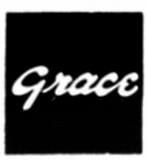
GRACE（グレース）
MM型カートリッジ・アームなどで有名な品川無線�鰍ﾌブランド。NHK放送技術研究所と共同開発したF-8シリーズなど国産MM型カートリッジを代表するブランド。現在はオーディオの第1線からは退いているが、会社自体は存続している。2009年には創立60周年記念事業として、自社製品ユーザー限定ながら、交換針などの再販売を行った。なおLINNのMC型カートリッジのOEM受託をしていたスペックスとは創業者同士が兄弟という関係にあった。
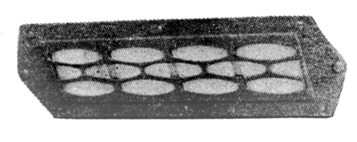
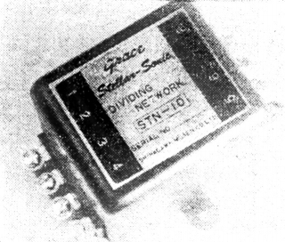
(1960年代初頭では、コンデンサー型トゥイーターなども扱っていた。トゥイーターST-3とネットワークSTN-10)
MM型の構造を生かした、針先やカンチレバーの材質を変えたバリエーションモデルの豊富さで有名なメーカーであり、新素材導入に積極的なメーカーであった。同一シリーズ内では交換針の互換性を保証していた。
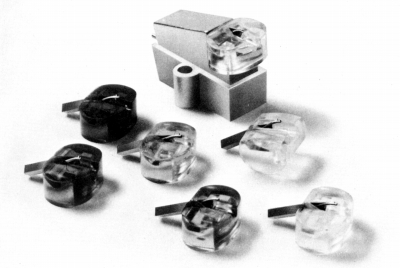
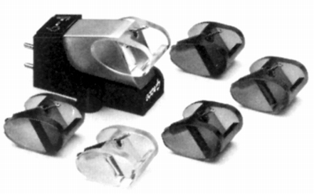
（左 最大のヒット作、F-8シリーズ 右 ポストF-8を目指したF-9シリーズ）
�T.カートリッジ
1.MM型
�@F-6系
1961年スタートのシリーズ。1970年代初頭に終了。同社のMM型カートリッジとしては、F-5に次ぐ、2番目のシリーズ。
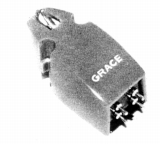
(F-6D)�AF-7系
1963年スタートのシリーズ。FR、イケダの池田 勇氏がグレース勤務時代に開発したとの話もある。1970年代初頭に終了。
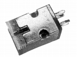
(F-7H)�BF-8系
1966年スタートのシリーズ。このブランドの代表的シリーズ。上段5機種が1970年頃の機種。下段はそれ以降の追加機種。
最初に開発されたのはF-8Lで、NHKの技術研究所との共同開発だったようだ。F-8Lは特性重視のフラット指向のモデル。次に作られたのがF-8DとF-8H。F-8Dは放送局用に用意された機種で、当時の基準だった0.7ミル針を採用し、針圧も重めの2.5〜3gでトレースするよう設計、当然コンプライアンスも低めであり、周波数的にも15kHzあたりから減退するようになっている。F-8Hは0.5ミルの接合ダイヤ針を採用、検査基準も甘くしたF8-Lのローコストモデル。F8-Mは、フラット指向のF-8Lに対し、迫力指向でチューンした機種、他のモデルより出力も3dBほど多め。F8-Cは、ハイコンプライアンス指向のモデルで、一番繊細な音がする。
ここまでの5機種については、差異は交換針部分であり、ボディは完全に共通であるそうだ。ただし息の長いモデルゆえ、内部は時代により差があり、たとえばコイルは初期はエナメル線が使われていたが、1973年頃にはポリウレタン被覆線になっていたそうで、その他、ハンダ処理やコイルの巻きムラの抑止など、各種改良が行われている。また同じ交換針自体でも、改良はあったらしい。
かつての4チャンネル、CD-4を意識して開発されたF8-E、Ｆ8-Fは、ボデイ自体にも、手が入っている。インピーダンスを下げ、振動系も従来の半分ぐらいの重量に抑えた。Ｆ8-Fは、特にCD-4を意識したモデルで、ビクターが開発したシバタ針がおごられ、Ｆ8-Eは、バランス重視で楕円針が採用されている。なお、交換針自体をF8-E、Ｆ8-Fのものに交換すれば、従来モデルでもCD-4に対応できるそうだ。CD-4以上の高周波への余力を持たせたのが、F8-E、Ｆ8-Fのボディだそうだ。
それ以降のモデルの詳細は不明である。
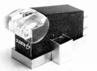
(F-8C)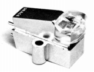
(F-8E)F-8E F-8F F-8L'10 F-8V F-8L/LC
�CF-9系
1970年代半ばに登場のF-8の上位機種。しかしF-8シリーズ程成功せず、派生モデルのSF-90を含め、1980年代初頭に姿を消す。
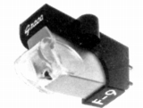
(F-9L)�DF-12系
カンチレバーの材質でバリエーションを設けた高級機。しかし次のLevel-�U系の登場で短命なシリーズとなった。
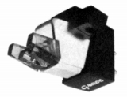
(F-12 Ruby)F-12L F-12 Boron F-12 Ruby F-12 Dia
�ELevel-�U系
マイクロリッジスタイラスやレアセラミックカンチレバーなどを導入したシリーズ。後半のモデルはコイルにLC-OFC線材を導入、最後にマイクロリッジ針モデルを増やした。なおこのモデルではLC-OFCモデルと一般のモデルはしばらく併売されていた。
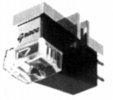
(Level-�U BR/MR)Level-�U AL Level-�U Ruby Level-�U BE Level-�U RC Level-�U BR/MR （*）
(*)通常銅線コイルのLevel-�Uシリーズには上記以外にもモデルが存在したが、詳細は不明。判明しているのはモノラルLP用のLevel-�U M-ML(\26,000)、SP用のLevel-�U M-SP(\28,000)、ソリッドベリリウムカンチレバーのLevel-�U Disco(\32,000)、サファイアカンチレバーのLevel-�U SAP(\35,000)、アルミカンチレバー/マイクロリッジ針のLevel-�U AL/MR(\28,000)、サファイアカンチレバー/マイクロリッジ針のLevel-�U SAP/MR(\37,000)。
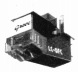
(Level-�U BR/MR・LC-OFC)Level-�U AL・LC-OFC Level-�U M-ML・LC-OFC Level-�U M-SP・LC-OFC Level-�U Ruby・LC-OFC Level-�U BE・LC-OFC
Level-�U Disco・LC-OFC Level-�U RC・LC-OFC Level-�U SAP・LC-OFC Level-�U BR/MR・LC-OFC
Level-�U AL/MR・LC-OFC Level-�U SAP/MR・LC-OFC
�FF-14系
「F」から始まる型番の最後のシリーズ。後半のモデルはコイルにLC-OFC線材を導入した。なおこのモデルではLC-OFCモデルと一般のモデルはあまり併売されなかったようだ。通常型が1984年、LC-OFCタイプが1985年とモデルチェンジが急だった為かもしれない。1986年にマイクロリッジ針モデルを拡大。
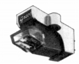
(F-14 BR/MR)F-14 BR/MR （*）
(*)初期のF-14シリーズにはF-14 BR/MR以外にもモデルが存在したが、詳細は不明。判明しているのはレアセラミックカンチレバーのF-14RC(\37,000)、ベリリウムカンチレバーのF-14BE(\31,000)、ルビーカンチレバーのF14-Ruby(\29,000)、アルミカンチレバーのF14-AL(\26,000)、サファイヤカンチレバーのF14-SAP(\37,000)。F-14 BR/MR以外は0.2×0.8mil超楕円針だったようだ。
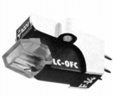
(F-14BE・LC-OFC)F-14 AL・LC-OFC F-14 M-ML・LC-OFC F-14Ruby・LC-OFC F-14 M-SP・LC-OFC F-14Disco・LC-OFC F-14BE・LC-OFC
F-14RC・LC-OFC F-14SAP・LC-OFC F-14BR/MR・LC-OFC
F-14 AL/MR・LC-OFC F-14SAP/MR・LC-OFC
�Gその他
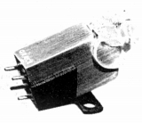
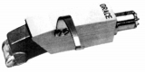
(左 F-21 右 SF-90)2.MC型
�@F-10系
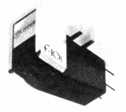
(F-10L)�AAsakuraシリーズ
創業者の姓から名付けた最後のMC型。
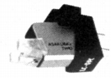
(Asakura's Two)�Bその他
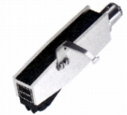
(SF-100)
�U.昇圧トランス
F-10シリーズに合わせ、登場。
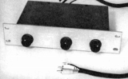
(GS-10)
�V.アーム
トーンアームについては1970年頃では製品点数で全ブランドの中で最大級の品揃えを誇っていた。MM型を主力とした関係か、低容量ケーブルを採用した機種が多い。なお通常のアームは型番の3桁の数字の2桁目が長さの目安であり、たとえば長さでいえばG-520L＜540L＜560Lとなる。1986年に主要なモデルの「�U」型モデルを発売後、終了。
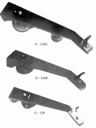
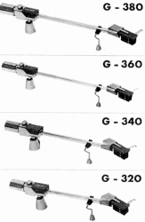
(100シリースや300シリーズもあったようだ。100シリーズは1960年代流行のグレイ・タイプ。300シリーズはシンプルなストレートタイプ）
1.500シリーズ
500シリーズは一般的なユニバーサル型。
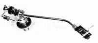
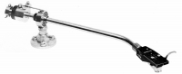
(左 G-545 右 G-540L)G-520L G-520S G-540L G-540S G-560L G-560S G-565 G-545
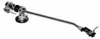
2.600シリーズ
600シリーズは業務用を視野に入れたシンプルな製品群。
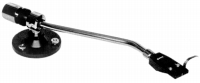
(G-640P)3.700シリーズ
700シリーズはストレートアームのインテグレートタイプ。
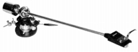
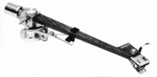
(左 G-707 右 G-714)G-707/�U(N) G-727/�U G-714/�U G-704/�U
4.800シリーズ
800シリーズは軽量タイプ。
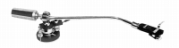
(G-840)5.900シリーズ
900シリーズはオイルダンプタイプ。
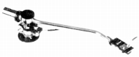
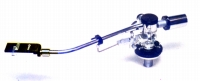
(左 G-940 右 G-945 Silver)G-940 G-960 G-945 G-945 Silver
6.1000シリーズ
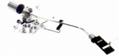
(G-1040)7.Σシリーズ
F-8系列のカートリッジを組んこんだ、専用設計のフルインテグレート・ピックアップ。
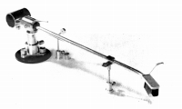
(Σ-709)
�W.その他
1.ヘッドシェル
アームに熱心なメーカーだけに、シェルはかなり豊富。
2.その他
アームリフター3点、針圧計1点、帯電除却器1点、クリーナー点、リードワイヤー2点。